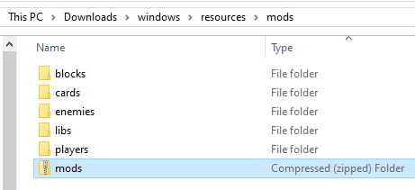
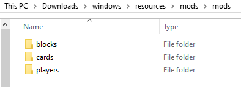
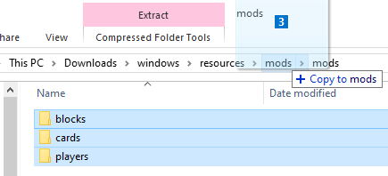
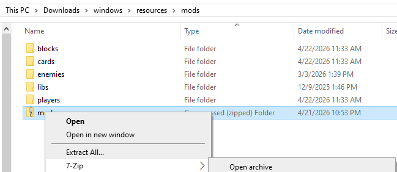
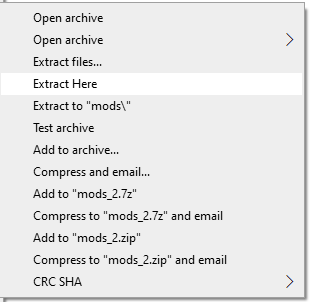
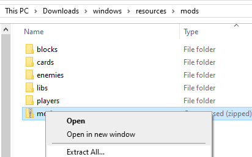
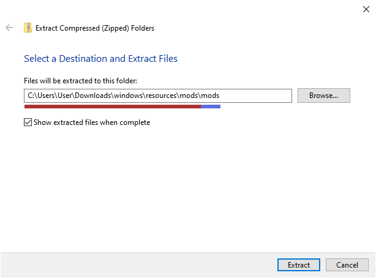
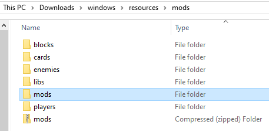
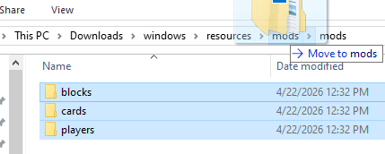
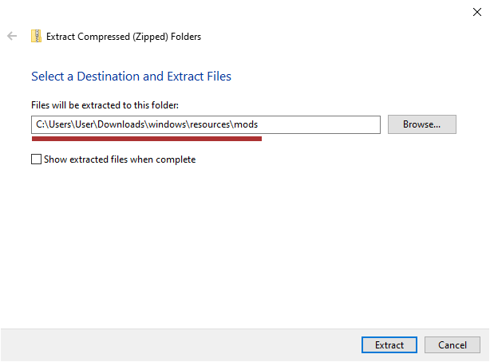

Modsites
Instead of tracking down and downloading mod packages individually, most
people use one of the mod websites, or modsites, instead. These make it easy
to search and bulk download mods. You can find the current links for these
by using the /higsby command in the Discord server.
I won't be providing the links here for a couple reasons:
- I'm biased and think you should join us in the Discord community (there will be help there if you get stuck anywhere)
- They might move and I'd have to update links
- They might have down periods or issues that you wouldn't be aware of without being around the community
The guide here might seem long, but you're really clicking two or three times, so don't feel too daunted. You'll have it down and do it in a few seconds next time.
If You Know What You're Doing
If you already know how to extract things, you can probably figure it out without the guide. Basically you just need to get the mod packages into the right folder. If you extract the ZIP you got from the modsite in place, the folders inside it will auto-merge with the ONB folders and you're good to go.
If they don't auto-merge and the way you extracted gives you an extra folder
that the ZIP contents went into, just pull the insides of that folder up one
directory so you can merge them with the ONB mods folders, or open a second
window and drag them over, or cut and paste them to the ONB mods folder for
the auto-merge.
Downloaded ZIP
Once you have made your selections and download, you'll get a ZIP file that
has all your downloads inside it. It might be called mods.zip, or maybe
MyMods-something.zip, depending on which modsite you used.
Put this ZIP into your ONB mods folder.

In this example, I've selected a few blocks, cards, and players. If I look
inside my mods.zip here, I'll see some folders inside.

It looks almost just like the mods folder. Because it's set up this way,
we can extract it and have the downloaded folders automatically merge with
the ones in the ONB mods folder.
Do not extract mods
Do not extract individual mod packages on your own. ONB
will do it in a special way on boot. When we talk about extracting here,
you'll only be extracting this mods download. It has more ZIPs inside,
but you will not extract any of these.
Extracting
You have a few options for extracting this.
Just Pull Them Out
Windows usually lets you move files straight out of a ZIP file. It'll make an extracted copy instead of actually moving them.
Open up the ZIP file with your downloaded mods, select them all, and pull them
over to the ONB mods folder. Here I do it from the address bar, but you can
also open in a new window and move them like that.

And you're done. You can open ONB now.
7-Zip
My preferred option is using 7-Zip, since it takes one click. You can download and install it from its official website, https://www.7-zip.org/. You can get its powers added to your right click menu, and it can extract .7z files and ZIP files.
If you right click the mods.zip, you'll see a 7-Zip option, with an arrow
like > on the right.

If you hover your cursor over it, it'll open a menu next to it, like you see
with the Open Archive above. The full menu is pictured here:

The only one we care about here is Extract Here. If you click that, it'll
extract the folders inside the ZIP and put them right here, in the ONB mods
folder. Since that means pulling out the cards folder and putting it
somewhere where there is already a folder named cards, these two folders
merge. Basically, everything sorts out and you're done, and you can launch
ONB now.
If you click Extract files... instead, 7-Zip will prompt you for where
it should be extracted. This usually ends up placing all of the files into
a brand new folder, named the same as the ZIP. You'll have one more step
to do if you do it like that, just like the Windows
Extract all.... You'll just have to move the folders into
the ONB mods folder, pulling them out of that extra folder you got.
Extract All...
If you right click the mods.zip, you'll see an Extract All... option.
Click it and Windows will give you a prompt for where the files should be
extracted to.


I've underlined part of the filepath it shows with red, and the other part with
blue. The red part, on the left, is the full path to the ONB mods folder. The
blue part, on the right, is a folder that doesn't actually exist yet. If you
leave it here, Windows will create a new folder right here with the same name
as the ZIP you're extracting. Mine is mods.zip, which is why you see \mods\mods
at the end (mods is there twice because of the ONB mods folder, and the new
folder called mods that will be put inside it).
Leaving As-Is
You can click Extract here and it's fine. You'll just have one more step to do. If you want to avoid this step, go to Avoid Extra Folder.
Now that the files have been extracted and put into a folder, you might see
this in your mods folder. It probably has the same name as the ZIP you
extracted.

They won't be loaded like this. We need to pull them out of this new folder.
If you left the Show extracted files when complete box checked, this folder
was opened in a new window. You can select them all and drag those folders
to the ONB mods folder. Otherwise, open the new folder up and do the same.

They'll all automatically merge and you're done. You can go launch ONB now.
Avoid Extra Folder
You can skip that if you tell Windows to extract directly to the ONB mods
folder instead of creating a new folder.
Delete the blue underlined part and you're good to go. You may as well uncheck the extra box, too, since you already have that folder open.

This will end up auto-merging the extracted folders with what's in the ONB
mods folder. All done. You can open ONB now.